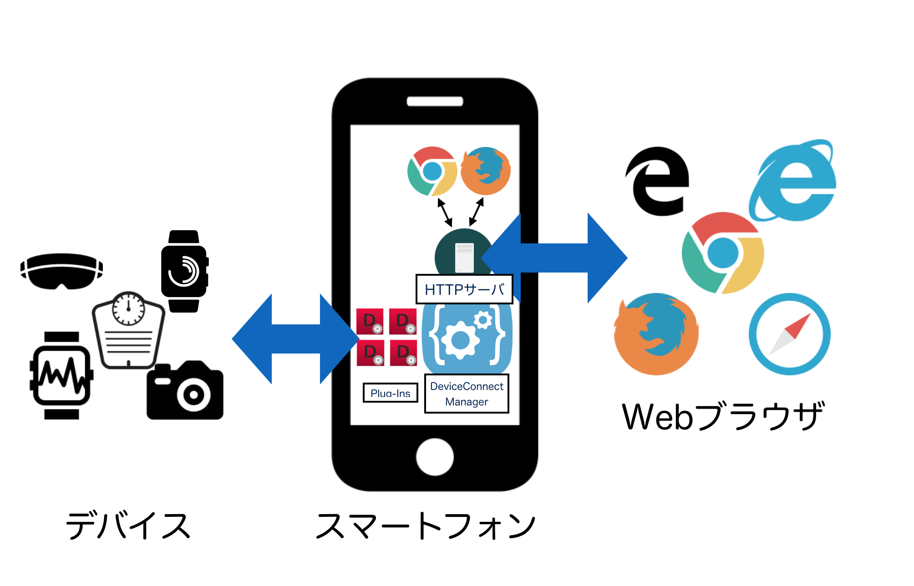

DeviceConnect Managerについて
AndroidでDeviceConnectを使う際に欠かせないのがDeviceConnect Managerです。DeviceConnect ManagerはAndroid内でHTTPサーバとして動作し、各種デバイスを操作するためのWeb APIを提供します。
DeviceConnect ManagerはRESTfulなWeb APIを提供するHTTPサーバと、各デバイス用プラグインを動かす機能を持っています。簡単に書くと次のようになります。

DeviceConnect ManagerはHTTPサーバなので、Android内部のブラウザはもちろん、外部環境（デスクトップのWebブラウザや各種プラグラミング言語）からアクセスできます（設定で許可する必要があります）。
DeviceConnect Managerは自分でビルドすることもできますし、Google Playからダウンロードもできます（実験的なアプリなのでご注意ください）。
Device Web API Manager - Google Play の Android アプリ
そして、DeviceConnect Managerはプラグインの管理も行います。プラグインは単体のAndroidアプリとしてビルドしますが、UIはありません。プラグインのビルド方法についてはプラグインのビルドを参照してください。